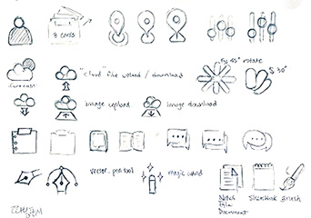
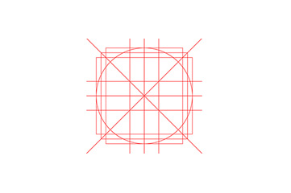
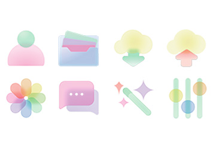
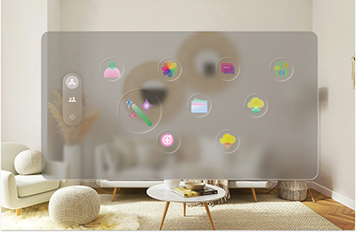
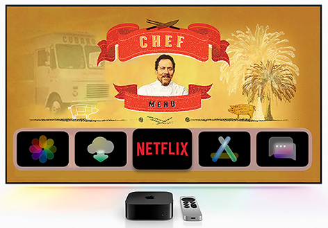

Glass Icon Testing
Overview: A self-taught UI study
Goal: To test glass icons devoloped by myself
Timeline: 1 year, October 2024 - October 2025
Icon Sketch
There are many grid systems available, but pnly a few worked seamlessly without added complexity.
Grid Template
There are many grid systems available, but pnly a few worked seamlessly without added complexity.
Glass Texture Rendering
I customized several icons specifically for visual designers, refining both their usability and aesthetic appeal.
Testing #1

I borrowed Apple's VisionPro interface. On a default background, the glass icons lacked visiblity and impact.
Testing #2
Icons performed better against a darker background, enhancing contrast and legibility. I increased the saturation value of all the icons.
Iteration
I tested them in the Apple TV interface. The black ground provided the strongest results.